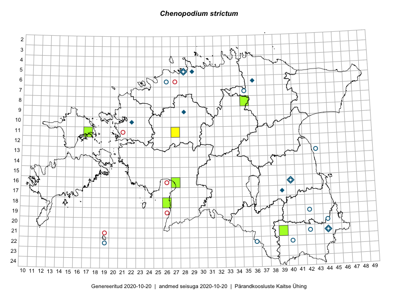

Chenopodium strictum — püstine hanemalts
Amaranthaceae :: Chenopodium strictum Roth (55); Chenopodium strictum subsp. striatiforme (Murr) Uotila (6); Chenopodium strictum subsp. strictum Roth (4); Chenopodium betaceum Andrz. (1)

Kaart põhineb 66 kirjel:
vaatlusi 1
herbaareksemplare 65
Taime kaasaegsed ja ajaloolised leiukohad asuvad 23 ruudus.
Tingmärgid ja leidudega ruutude arvud periooditi uues (u) ja 2005 andmestikus (v)
| █ | vahemik | u1 | v2 |
|---|---|---|---|
| █ | 2006–2020 | 6 | – |
| ◆/◇ | 1971–2005 | 8 | 1 |
| ○ | 1921–1970 | 12 | 11 |
| + | kuni 1920 | 0 | 0 |
| × | hävinud | – | 0 |
| ? | kaheldav | – | 0 |
| Ruut | Leidja(d) | Leiuaeg | Kirje |
|---|---|---|---|
| 21-39 | Toomas Kukk, Peedu Saar | 2019-08-01 | TAA0148762: Chenopodium strictum Roth |
| 16-27 | Indrek Tammekänd | 2017-09-22 | TAA0143716: Chenopodium strictum Roth |
| 08-35 | Toomas Kukk, Sander Laherand, Nele Jõessar | 2016-07-27 | TAA0137130: Chenopodium strictum Roth |
| 18-26 | Meeli Mesipuu, Timo Luhamäe | 2016-07-18 | TAA0145278: Chenopodium strictum Roth |
| 11-27 | Meeli Mesipuu | 2016-07-08 | ruut/ala: Chenopodium strictum Roth |
| 16-27 | Indrek Tammekänd | 2015-09-19 | TAA0136061: Chenopodium strictum Roth |
| 16-27 | Vilma Kuusk | 2013-08-24 | TAA0118524: Chenopodium strictum Roth |
| 16-27 | Vilma Kuusk | 2013-08-24 | TAA0118525: Chenopodium strictum Roth |
| 16-27 | Vilma Kuusk | 2013-08-12 | TAA0118518: Chenopodium strictum Roth |
| 11-17 | Toomas Kukk | 2012-08-16 | TAA0112423: Chenopodium strictum Roth |
| 17-39 | 2003-07-24 | TAA0071094: Chenopodium strictum Roth | |
| 09-28 | H. Aasamaa | 1996-08-24 | TAM0127058: Chenopodium strictum Roth |
| 10-22 | Tõnu Ploompuu | 1995-10-06 | TALL C008785: Chenopodium strictum Roth |
| 06-36 | Tõnu Ploompuu | 1990-09-15 | TALL C010716: Chenopodium strictum subsp. strictum Roth |
| 21-44 | Tõnu Ploompuu | 1990-08-30 | TALL C010712: Chenopodium strictum Roth |
| 16-40 | Tõnu Ploompuu | 1990-08-28 | TALL C010717: Chenopodium strictum subsp. strictum Roth |
| 05-28 | Tõnu Ploompuu | 1990-08-24 | TALL C010591: Chenopodium strictum subsp. strictum Roth |
| 05-29 | Tõnu Ploompuu | 1990-07-29 | TALL C010714: Chenopodium strictum Roth |
| 20-44 | Maret Kask | 1970-07-29 | TAA0071083: Chenopodium strictum Roth |
| 20-44 | Maret Kask | 1970-07-29 | TAA0071104: Chenopodium strictum subsp. striatiforme (Murr) Uotila |
| 20-44 | Maret Kask | 1970-07-29 | TAA0071105: Chenopodium strictum subsp. striatiforme (Murr) Uotila |
| 05-28 | A. Remmel | 1969-10-21 | TU271623: Chenopodium strictum Roth |
| 05-28 | A. Remmel | 1968-10-10 | TU271626: Chenopodium strictum Roth |
| 05-28 | A. Remmel | 1968-10-10 | TU271646: Chenopodium strictum Roth |
| 05-28 | A. Remmel | 1968-10-10 | TU271651: Chenopodium strictum Roth |
| 05-28 | A. Remmel | 1968-10-10 | TU271652: Chenopodium strictum Roth |
| 05-28 | A. Remmel | 1968-10-07 | TU271618: Chenopodium strictum Roth |
| 05-28 | A. Remmel | 1968-10-07 | TU271619: Chenopodium strictum Roth |
| 05-28 | A. Remmel | 1968-10-07 | TU271620: Chenopodium strictum Roth |
| 05-28 | A. Remmel | 1968-10-07 | TU271632: Chenopodium strictum Roth |
| 05-28 | A. Remmel | 1968-10-07 | TU271633: Chenopodium strictum Roth |
| 05-28 | A. Remmel | 1968-10-07 | TU271647: Chenopodium strictum Roth |
| 16-40 | Visolde Puusepp | 1968-09 | TAA0071086: Chenopodium strictum Roth |
| 16-40 | Visolde Puusepp | 1967-10-25 | TAA0071090: Chenopodium strictum Roth |
| 16-40 | A. Remmel | 1967-10-25 | TU271621: Chenopodium strictum Roth |
| 16-40 | A. Remmel | 1967-10-25 | TU271622: Chenopodium strictum Roth |
| 16-40 | A. Remmel | 1967-10-25 | TU271625: Chenopodium strictum Roth |
| 16-40 | A. Remmel | 1967-10-25 | TU271627: Chenopodium strictum Roth |
| 05-28 | A. Remmel | 1967-10-09 | TU271614: Chenopodium strictum Roth |
| 05-28 | A. Remmel | 1967-10-04 | TU271649: Chenopodium strictum Roth |
| 05-28 | A. Remmel | 1967-10-04 | TU271650: Chenopodium strictum Roth |
| 21-42 | A. Remmel | 1966-10-14 | TU271624: Chenopodium strictum Roth |
| 16-40 | A. Remmel | 1966-10-10 | TU271628: Chenopodium strictum Roth |
| 05-28 | A. Remmel | 1965-10-07 | TU271615: Chenopodium strictum Roth |
| 16-40 | A. Remmel | 1964-09-18 | TU271616: Chenopodium strictum Roth |
| 19-42 | L. Pihlapuu | 1964-09-11 | TU271645: Chenopodium strictum subsp. strictum Roth |
| 13-43 | Vilma Kuusk | 1964-07-31 | TAA0071102: Chenopodium strictum Roth |
| 20-44 | L. Pihlapuu | 1963-08-19 | TU271635: Chenopodium strictum Roth |
| 22-36 | L. Pihlapuu | 1963-08-14 | TU271638: Chenopodium strictum subsp. striatiforme (Murr) Uotila |
| 21-42 | L. Pihlapuu | 1963-07-05 | TU271636: Chenopodium strictum Roth |
| 21-42 | L. Pihlapuu | 1963-07-05 | TU271637: Chenopodium strictum subsp. striatiforme (Murr) Uotila |
| 06-26 | A. Remmel | 1960-08-17 | TAA0071088: Chenopodium strictum Roth |
| 06-26 | A. Remmel | 1960-08-17 | TU271648: Chenopodium strictum Roth |
| 06-26 | A. Remmel | 1960-08-17 | TU300867: Chenopodium betaceum Andrz. |
| 05-28 | A. Remmel | 1959-10-10 | TU271629: Chenopodium strictum Roth |
| 21-44 | L. Pihlapuu | 1959-08-07 | TU271634: Chenopodium strictum subsp. striatiforme (Murr) Uotila |
| 07-35 | Maret Kask | 1958-08-04 | TAA0071106: Chenopodium strictum subsp. striatiforme (Murr) Uotila |
| 05-28 | Maret Kask | 1957-09-14 | TAA0071089: Chenopodium strictum Roth |
| 16-40 | A. Remmel | 1957-09-12 | TU271617: Chenopodium strictum Roth |
| 22-40 | Maret Kask | 1957-08-16 | TAA0071087: Chenopodium strictum Roth |
| 16-40 | Maret Kask | 1947-09-25 | TAA0071095: Chenopodium strictum Roth |
| 16-40 | Maret Kask | 1947-09-25 | TAA0071096: Chenopodium strictum Roth |
| 16-40 | Maret Kask | 1947-08-26 | TAA0071091: Chenopodium strictum Roth |
| 16-40 | Maret Kask | 1947-08-26 | TAA0071092: Chenopodium strictum Roth |
| 16-40 | Maret Kask | 1947-08-26 | TAA0071093: Chenopodium strictum Roth |
| 22-19 | Gustav Vilbaste | 1932-07-17 | TAA0071101: Chenopodium strictum Roth |
Ruutude arv uue atlase andmekogu järgi. Muuhulgas arvestab vanemat herbaariumi, 2005. aasta atlase välitöölehtedelt uuesti digitaliseeritud andmeid jne. Uue atlase andmekogust pärinevad andmed on kaardile kantud siniste sümbolitega.↩︎
Ruutude arv 2005. aasta atlase (Kukk, T., Kull, T., Eesti taimede levikuatlas. Eesti Maaülikool, Põllumajandus- ja Keskkonnainstituut, Tartu, 2005) järgi. Andmeallikana on kasutatud levik.exe programmi, kus igas ruudus on registreeritud vaid uusim leid. Seetõttu on vanemate perioodide kohta andmed puudulikud. Kasutatud levik.exe andmestikus leidub mõningaid kõrvalekaldeid atlase trükis ilmunud versioonist, sagedamini tarnade ja käpaliste seas. Lisaks leidub selles andmestikus valik liike (peamiselt väheste leidudega tulnuktaimed), mille kaarte trükis ei avaldatud. Vana atlase andmed ruutudest, milles ei ole uue atlase andmekogus leide enne 2006. aastat, on kaardil esitatud punaste sümbolitega. Vana atlase andmetel hävinud ja kaheldavaid leiukohti pole hilisemate (taas)leidude põhjal korrigeeritud.↩︎